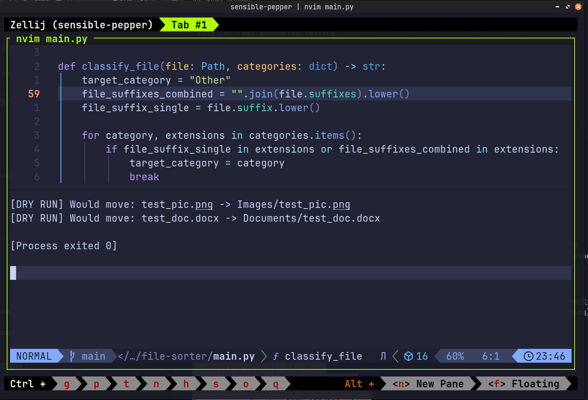

File Sorter (Part 2): Functions, Dry-Run, and Safe Duplicates
In my previous post, I built a basic Python script to clean up a cluttered Downloads folder. It did the job, but it was just a procedural script with clear risks: it could overwrite files with duplicate names, and running it meant making changes directly to the filesystem without a preview.
As someone training to become a QA engineer, I realized this was not reliable enough. Before writing automated tests, code must be modular and predictable.
Here is how I upgraded the script to make it safer and test-ready.
What Changed?
1. Modular Functions (Preparing for Pytest)
In the first version, everything ran in a single loop. To test logic effectively, inputs and outputs need to be isolated. I split the logic into dedicated functions:
classify_file(): pure logic that only determines the category.get_unique_path(): handles file naming collisions.move_file(): handles the actual filesystem operation.sort_directory(): coordinates the entire workflow.
2. Collision Handling: No Overwrites
If you download report.pdf multiple times, standard move operations
might overwrite older files. I added get_unique_path() to append an
incrementing index if a file already exists in the target folder:
def get_unique_path(destination: Path) -> Path:
if not destination.exists():
return destination
counter = 1
while True:
new_filename = (
f"{destination.stem}_{counter}{destination.suffix}"
)
new_destination = destination.parent / new_filename
if not new_destination.exists():
return new_destination
counter += 1
Now, report.pdf safely becomes report_1.pdf, protecting user data.
3. Dry-Run Mode
Testing file operations on real directories can be risky. Adding a
dry_run=True flag allows previewing exactly what the script will do
without touching a single file:

{kind=link}
Full Updated Script
Here is the refactored main.py:
import shutil
from pathlib import Path
CATEGORIES = {
"Images": [
".jpg",
".jpeg",
".png",
".gif",
],
"Documents": [
".pdf",
".docx",
".txt",
".xlsx",
".csv",
".json",
".log",
],
"Installers": [
".deb",
".apk",
".exe",
".iso",
],
"Torrents": [
".torrent",
],
"Video": [
".mp4",
".m4v",
".avi",
".mov",
".mpeg",
".ts",
".mpg",
".vob",
".webm",
".mkv",
],
"Scripts": [
".py",
".sh",
],
"Archives": [
".zip",
".rar",
".tar.gz",
".7z",
".gz",
".tar",
".tar.zst",
],
}
def classify_file(file: Path, categories: dict) -> str:
target_category = "Other"
file_suffixes_combined = "".join(file.suffixes).lower()
file_suffix_single = file.suffix.lower()
for category, extensions in categories.items():
if (
file_suffix_single in extensions
or file_suffixes_combined in extensions
):
target_category = category
break
return target_category
def get_unique_path(destination: Path) -> Path:
if not destination.exists():
return destination
counter = 1
while True:
new_filename = (
f"{destination.stem}_{counter}{destination.suffix}"
)
new_destination = destination.parent / new_filename
if not new_destination.exists():
return new_destination
counter += 1
def move_file(
file: Path, target_folder: Path, dry_run: bool = False
) -> None:
destination = target_folder / file.name
destination = get_unique_path(destination)
if dry_run:
print(
f"[DRY RUN] Would move: {file.name} -> "
f"{target_folder.name}/{destination.name}"
)
return
target_folder.mkdir(exist_ok=True, parents=True)
try:
shutil.move(str(file), str(destination))
print(f"File: {file.name} | Category: {target_folder.name}")
except (OSError, shutil.Error) as e:
print(f"Error moving {file.name} {e}")
def sort_directory(
directory_path: Path, categories: dict, dry_run: bool = False
) -> None:
for file in directory_path.iterdir():
if not file.is_file():
continue
target_category = classify_file(file, categories)
target_folder = directory_path / target_category
move_file(file, target_folder, dry_run=dry_run)
if __name__ == "__main__":
downloads_dir = Path.home() / "Downloads"
sort_directory(downloads_dir, CATEGORIES, dry_run=True)
Next Steps
Now that the code is divided into small, independent functions, it is ready for real automated testing.
In the upcoming part, I will focus on:
- Writing unit tests with Pytest using fixtures and temporary
directories (
tmp_path). - Setting up a CI pipeline with GitHub Actions to run tests automatically on push.